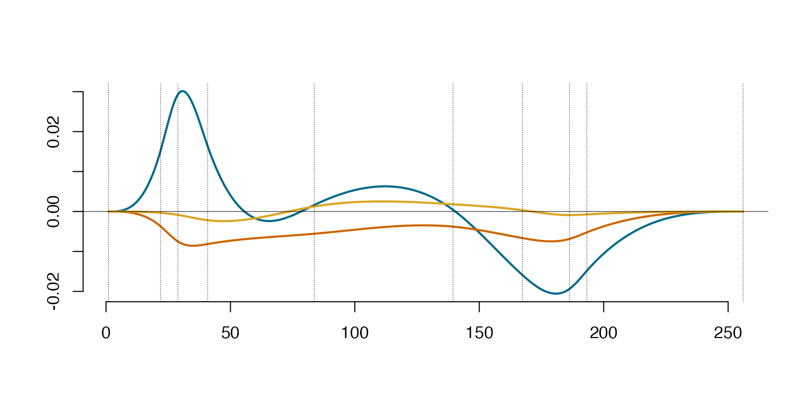
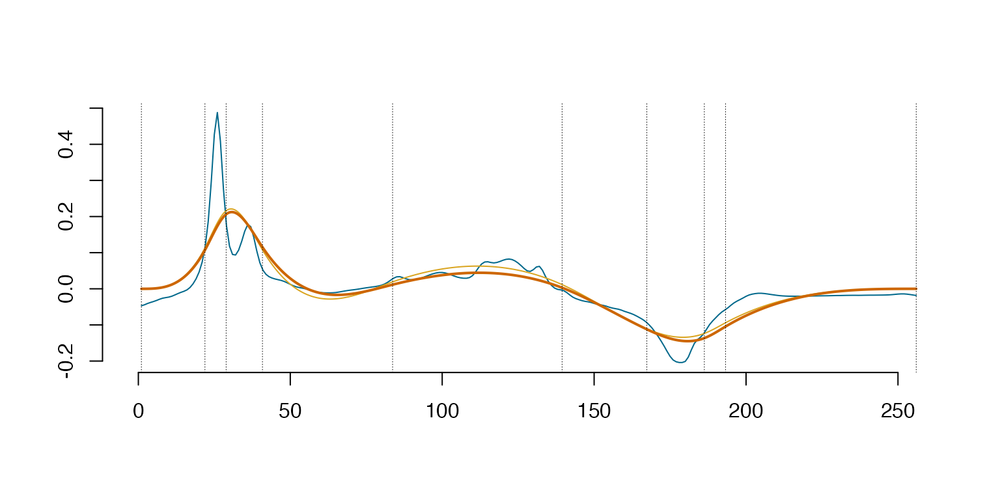

Functional Principal Value Decomposition with the Wine data
Source:vignettes/FunctionalPrincipalValueDecomposition.Rmd
FunctionalPrincipalValueDecomposition.RmdThis is a reproducible Wine data example use in the paper Splinets - Orthogonal Splines for Functional Data Analysis}
Wine data set
# source the set of the needed auxiliary functions
source("WineDataExampleAuxFunc.R")
library(DDK) # the DDK package is needed to get the wine data
#>
#> Attaching package: 'DDK'
#> The following object is masked from 'package:base':
#>
#> split
# get the data from the DKK pacakge
data("Wine")
f_data_wine <- Wine$x.learning
t_df_wine <- seq(1, dim(f_data_wine)[2])
# test data
f_data_wine_test <- Wine$x.test
t_df_wine_test <- seq(1, dim(f_data_wine_test)[2])
# remove raw 84 since it is an outlier
f_data_wine <- f_data_wine[-84,]Project the data and perform the eigen decomposition
# project the data and perfrom the eigen decomposition
WineProj = project(WineData, Wine_DDKnots) # Project wine data onto spline bases
Sigma = cov(WineProj$coeff) # Covariance matrix of the projection coefficients
Spect = eigen(Sigma, symmetric = T) # eigen decomposition of the covariance matrix
EigenSp = lincomb(WineProj$basis, t(Spect$vec))Functional eigenfunctions
Create a functional eigenfunctions by linearly combining the splinets basis functions (from ProjObj basis) with the eigenvectors.
# Plot the eigenfunction-eigenvalue scaled for EigenNumber = 3
y <- evspline(EigenSp, sID = 1:3)
Arg <- y[,1]
Val <- y[,-1,drop=FALSE]
plot(Arg, Val[,1] * sqrt(Spect$values[1]), type='l', bty='n', col='deepskyblue4', lty=1, lwd=2, xlab="", ylab="")
ourcol <- c('darkorange3', 'goldenrod', 'darkorchid4', 'darkolivegreen4', 'deepskyblue', 'red4', 'slateblue','deepskyblue4')
for(i in 2:3) {
lines(Arg, Val[,i] * sqrt(Spect$values[i]), col=ourcol[(i-2) %% 8 + 1], lty=1, lwd=2)
}
abline(v = EigenSp@knots, lty = 3, lwd = 0.5)
abline(h = 0, lwd = 0.5)
CmatWine=WineProj$coeff %*% Spect$vec
matplot(WineData[,1],WineData[,2],type='l',lty=1,xlab='',ylab='', bty="n", col="deepskyblue4", xlim = c(-1.5,dim(t(WineData[, -1]))[2]))
lines(WineProj$sp,sID=2-1,col='goldenrod',lty=1,lwd=1)
lines(lincomb(subsample(EigenSp, 1),CmatWine[1,1,drop=F]),col='darkorange3')
abline(v = EigenSp@knots, lty = 3, lwd = 0.5)